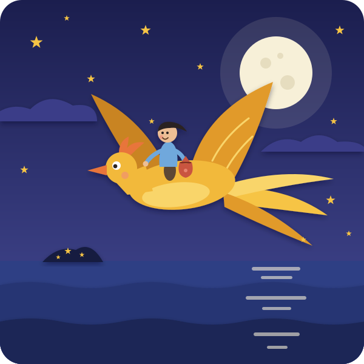
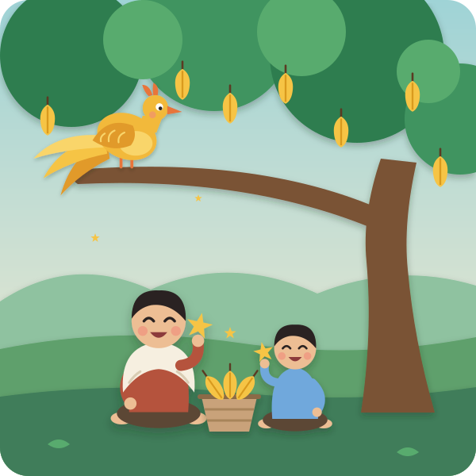

Once upon a time, in a little village in Vietnam, near the sea, there lived two brothers.
Big Brother liked to have lots and lots of things. Little Brother liked to look after things.
When they grew up, Big Brother said, "I'll take the big house, and the rice fields, and the water buffalo. And you — you can have that old starfruit tree, and the little hut beside it."
Little Brother didn't argue. He loved that tree. Every day he watered it, and talked to it, and pulled the weeds away from its roots. And the starfruit tree grew starfruit — shiny, yellow, juicy starfruit. And do you know the secret of a starfruit? When you cut it into slices, every single slice is shaped like a star. ⭐
One morning, when the fruit was ripe and golden, Little Brother heard a sound. Whoosh… whoosh… whoosh… Kai flaps his arms — big slow wings
A bird came flying down from the sky. But not an ordinary bird — a giant bird, as big as a boat, with feathers that shone like gold in the sun. It landed in the starfruit tree, and the whole tree went creeeak. And then it began to eat the starfruit. Gobble. Gobble. Gobble.
Little Brother's eyes filled with tears. "Oh, golden bird," he said, "that tree is all I have. If you eat all the fruit, what will I eat?"
The golden bird stopped. It looked at Little Brother with big, kind, shining eyes. And then it sang:
"Eat one fruit, I pay in gold —
three hands long, your bag to hold!"
say it again, slowly, so Kai can join in
"Ăn một quả, trả cục vàng — may túi ba gang, mang đi mà đựng." the Vietnamese rhyme, if you'd like to say it too
Three hands long — that's not very big. Put your hands out, one after another: one hand, two hands, three hands. Kai measures it on his lap That big. So Little Brother sewed a little cloth bag, exactly three hands long, and he waited.
Early, early the next morning, before the sun woke up, the golden bird came back. It bent down its great golden wing, and Little Brother climbed onto its soft, warm back.
And up they flew! Up over the starfruit tree. Up over the little hut. Up over the village, where everybody was still asleep. And out, over the sea.
Flap… flap… flap…
The moon was still in the sky, round and silver, and it made a shiny path across the water. The sea was calm and sleepy. The stars twinkled. The wind whistled softly past Little Brother's ears — wheeeee — and he held on tight to the golden feathers.

At last, they came to a little island far out in the sea. And the island was sparkling. There were golden stones on the sand, and shiny jewels in the rock pools, glittering red and green and blue.
"Take what fits in your bag," said the bird.
So Little Brother filled his little bag, three hands long — and then he stopped. Just one bag. That was enough.
The golden bird flew him home, flap, flap, flap, over the silver sea. And with that little bag of gold, Little Brother fixed his hut, bought rice for himself, and gave rice to everyone in the village who was hungry.
Now, Big Brother heard all about it. "A golden bird? An island of gold?" he said. "I want it!" So he ran to Little Brother. "Let's swap!" he said. "You can have my big house and my fields and my buffalo — and I'll have your starfruit tree."
Little Brother said yes. And Big Brother sat under the starfruit tree and waited.
Sure enough — whoosh, whoosh, whoosh — the golden bird came, and began to eat the starfruit. Big Brother pretended to cry. "Boo hoo! My tree!" And the golden bird sang:
"Eat one fruit, I pay in gold —
three hands long, your bag to hold!"
"Three hands? Pfff!" said Big Brother. And he sewed a bag ten hands long. It was so big it dragged along the ground!
The next morning the golden bird flew him over the sea to the sparkling island. And Big Brother grabbed. He filled the giant bag with gold. Then he filled his pockets. Then he filled his hat. Then he filled his shoes! "More! More! More!"
"Hold on," said the golden bird. And it flapped its great wings to fly home.
Flap… flap… FLAP… flap…
But oh, it was SO heavy. The bird wobbled this way. Kai leans left The bird wobbled that way. Kai leans right It flew lower… and lower… and lower… until its golden toes were just touching the waves near the beach. "Too heavy," puffed the bird. "Let go of the bag!"
"Never!" said Big Brother. "It's MY gold!" And he held on so tight that — whoops! — the bag slipped off the bird's back and pulled Big Brother right off with it.
SPLASH!
Down he plopped into the sea. But it was the warm, shallow water right by the shore — only up to his tummy. The heavy bag of gold sank down to the sandy bottom, and Big Brother stood up, blinking and spluttering, with seaweed on his head and a little crab on his nose. Kai can make the crab go pinch-pinch
He waded all the way home, squelch, squelch, squelch — no gold, no hat, no shoes — dripping wet.
And who came running down from the big house to meet him at the starfruit tree? Little Brother. He didn't laugh. He didn't say "I told you so." He just wrapped his big brother in a warm towel, sat him down under the tree, picked a ripe, golden starfruit, and cut it into slices.
And every slice was a star.
"Here," said Little Brother. "One for you, and one for me."
Big Brother looked at the little star in his hand. "Thank you," he said quietly. "I think… I think sharing is better than grabbing."

So the two brothers sat together under the starfruit tree, eating stars. And high up in the branches, the golden bird watched them — and if you listen very carefully, on a quiet morning, you might hear it singing, softly:
"Eat one fruit, I pay in gold —
three hands long, your bag to hold."